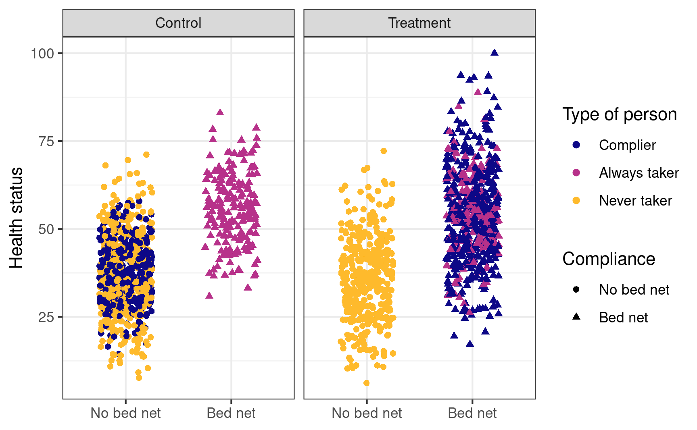

Throughout this course, we’ve talked about the difference between the average treatment effect (ATE), or the average effect of a program for an entire population, and conditional average treatment effect (CATE), or the average effect of a program for some segment of the population. There are all sorts of CATEs: you can find the CATE for men vs. women, for people who are treated with the program (the average treatment on the treated, or ATT or TOT), for people who are not treated with the program (the average treatment on the untreated, or ATU), and so on.
One important type of CATE is the effect of a program on just those who comply with the program. We can call this the complier average treatment effect, but the acronym would be the same as conditional average treatment effect, so we’ll call it the complier average causal effect or CACE.
Thinking about compliance is important. You might randomly assign people to receive treatment or a program, but people might not do what you tell them. Additionally, people might do the program if assigned to do it, but they would have done it anyway. We can split the population into four types of people:
Compliers: People who follow whatever their assignment is (if assigned to treatment, they do the program; if assigned to control, they don’t)
Always takers: People who will receive or seek out the program regardless of assignment (if assigned to treatment, they do the program; if assigned to control, they still do the program)
Never takers: People who will not receive or seek out the program regardless of assignment (if assigned to treatment, they don’t do the program; if assigned to control, they also don’t do it)
Defiers: People who will do the opposite of whatever their assignment is (if assigned to treatment, they don’t do the program; if assigned to control, they do the program)
To simplify things, evaluators and econometricians assume that defiers don’t exist based on the idea of monotonicity, which means that we can assume that the effect of being assigned to treatment only increases the likelihood of participating in the program (and doesn’t make it more likely).
The tricky part about trying to find who the compliers are in a sample is that we can’t know what people would have done in the absence of treatment. If we see that someone in the experiment was assigned to be in the treatment group and they then participated in the program, they could be a complier (since they did what they were assigned to do), or they could be an always taker (they did what they were assigned to do, but they would have done it anyway). Due to the fundamental problem of causal inference, we cannot know what each person would have done in a parallel world.
We can use data from a hypothetical program to see how these three types of compliers distort our outcomes, and more importantly, how we can disentangle compliers from their always- and never-taker counterparts.
If you want to follow along with this example, you can download these two datasets:
Finding compliers with a mind-reading time machine
First let’s load the data and reorder some of the categories:
Code
library(tidyverse) # ggplot(), %>%, mutate(), and friendslibrary(broom) # Convert models to data frameslibrary(estimatr) # Run 2SLS models in one step with iv_robust()bed_nets <-read_csv("data/bed_nets_observed.csv") %>%# Make "No bed net" (control) come firstmutate(bed_net =fct_relevel(bed_net, "No bed net"))bed_nets_time_machine <-read_csv("data/bed_nets_time_machine.csv") %>%# Make "No bed net" come first and "Complier" come firstmutate(bed_net =fct_relevel(bed_net, "No bed net"),status =fct_relevel(status, "Complier"))
This is what we would be able to see if we could read everyone’s minds. There are always takers who will use a bed net regardless of the program, and they’ll have higher health outcomes. However, those better outcomes are because of something endogenous—there’s something else that makes these people always pursue bed nets, and that’s likely related to health. We probably want to not consider them when looking for the program effect. There are never takers who won’t ever use a bed net, and they have worse health outcomes. Again, there’s endogeneity here—something is causing them to not use the bed nets, and it likely also causes their health level. We don’t want to look at them either.
The first group—the compliers—are the people we want to focus on. Here we see that the program had an effect when compared to a control group.
Code
set.seed(1234) # Make the jittering the same every timeggplot(bed_nets_time_machine, aes(y = health, x = treatment)) +geom_point(aes(shape = bed_net, color = status),position =position_jitter(height =NULL, width =0.25)) +facet_wrap(vars(status)) +labs(color ="Type of person", shape ="Compliance",x =NULL, y ="Health status") +scale_color_viridis_d(option ="plasma", end =0.85) +theme_bw()
Finding compliers in actual data
This is what we actually see in the data, though. You can tell who some of the always takers are (those who used bed nets after being assigned to the control group) and who some of the never takers are (those who did not use a bed net after being assigned to the treatment group), but compliers are mixed up with the always and never takers. We have to somehow disentangle them!
Code
set.seed(1234)ggplot(bed_nets_time_machine, aes(y = health, x = bed_net)) +geom_point(aes(shape = bed_net, color = status),position =position_jitter(height =NULL, width =0.25)) +facet_wrap(vars(treatment)) +labs(color ="Type of person", shape ="Compliance",x =NULL, y ="Health status") +scale_color_viridis_d(option ="plasma", end =0.85) +theme_bw()

We can do this by assuming the proportion of compliers, never takers, and always takers are equally spread across treatment and control (which we can assume through the magic of randomization). If that’s the case, we can calculate the intent to treat (ITT) effect, which is the CATE of being assigned treatment (or the effect of being assigned treatment on health status, regardless of actual compliance).
The ITT is actually composed of three different causal effects: the complier average causal effect (CACE), the always taker average causal effect (ATACE), and the never taker average causal effect (NTACE). In the formula below, \(\pi\) stands for the proportion of people in each group. Formally, the ITT can be defined like this:
The number we care about the most here is the CACE, which is stuck in the middle of the equation. But we can rescue it with some fun logical and algebraic trickery!
If we assume that assignment to treatment doesn’t make someone more likely to be an always taker or a never taker, we can set the ATACE and NTACE to zero, leaving us with just three variables to worry about: ITT, \(\pi_\text{c}\), and CACE:
If we can find the ITT and the proportion of compliers, we can find the complier average causal effect (CACE). Fortunately, both those pieces—ITT and \(\pi_\text{C}\)—are findable in the data we have!
The ITT here is ≈6—being assigned treatment increases average health status by 5.99 health points.
Finding the proportion of compliers
The proportion of compliers is a little trickier, but doable with some algebraic trickery. Recall from the graph above that the people who were in the treatment group and who complied are a combination of always takers and compliers. This means we can say:
We actually know \(\pi_\text{A}\)—remember in the graph above that the people who were in the control group and who used bed nets are guaranteed to be always takers (none of them are compliers or never takers). If we assume that the proportion of always takers is the same in both treatment and control, we can use that percent here, giving us this final equation for \(\pi_\text{C}\):
\[
\begin{aligned}
\pi_\text{C} =& \text{% yes in treatment} - \pi_\text{A} \\
=& \text{% yes in treatment} - \text{% yes in control}
\end{aligned}
\]
So, if we can find the percent of people assigned to treatment who used bed nets, find the percent of people assigned to control and used bed nets, and subtract the two percentages, we’ll have the proportion of compliers, or \(\pi_\text{C}\). We can do that with the data we have (61% - 19.5% = 41.5% compliers):
Code
bed_nets %>%group_by(treatment, bed_net) %>%summarize(n =n()) %>%mutate(prop = n /sum(n))## # A tibble: 4 × 4## # Groups: treatment [2]## treatment bed_net n prop## <chr> <fct> <int> <dbl>## 1 Control No bed net 808 0.805## 2 Control Bed net 196 0.195## 3 Treatment No bed net 388 0.390## 4 Treatment Bed net 608 0.610# pi_c = prop yes in treatment - prop yes in controlpi_c <-0.6104418-0.1952191
Finally, now that we know both the ITT and \(\pi_\text{C}\), we can find the CACE (or the LATE):
Code
CACE <- ITT / pi_cCACE## [1] 14.43
It’s 14.4, which means that using bed nets increased health by 14 health points for compliers (which is a lot bigger than the 6 that we found before). We successfully filtered out the always takers and the never takers, and we have our complier-specific causal effect.
Finding the CACE/LATE with IV/2SLS
Doing that is super tedious though! What if there was an easier way to find the effect of the bed net program for just the compliers? We can do this with IV/2SLS regression by using assignment to treatment as an instrument.
Assignment to treatment works as an instrument because it’s (1) relevant, since being told to use bed nets is probably highly correlated with using bed nets, (2) exclusive, since the only way that being told to use bed nets can cause changes in health is through the actual use of the bed nets, and (3) exogenous, since being told to use bed nets probably isn’t related to other things that cause health.
Here’s a 2SLS regression with assignment to treatment as the instrument:
Code
model_2sls <-iv_robust(health ~ bed_net | treatment, data = bed_nets)tidy(model_2sls)## term estimate std.error statistic p.value conf.low conf.high df outcome## 1 (Intercept) 38.12 0.5151 74.01 0.000e+00 37.11 39.13 1998 health## 2 bed_netBed net 14.43 1.2538 11.51 1.038e-29 11.97 16.89 1998 health
The coefficient for bed_net is identical to the CACE that we found manually! Instrumental variables are helpful for isolated program effects to only compliers when you’re dealing with noncompliance.
Source Code
---title: "Complier average treatment effects"---```{r setup, include=FALSE}knitr::opts_chunk$set(fig.width =6, fig.asp =0.618, fig.align ="center",fig.retina =3, out.width ="75%", collapse =TRUE)set.seed(1234)options("digits"=4, "width"=150)options(dplyr.summarise.inform =FALSE)```## Compliance and treatment effectsThroughout this course, we've talked about the difference between the average treatment effect (ATE), or the average effect of a program for *an entire population*, and conditional average treatment effect (CATE), or the average effect of a program for some segment of the population. There are all sorts of CATEs: you can find the CATE for men vs. women, for people who are treated with the program (the average treatment on the treated, or ATT or TOT), for people who are not treated with the program (the average treatment on the untreated, or ATU), and so on.One important type of CATE is the effect of a program on just those who *comply* with the program. We can call this the complier average treatment effect, but the acronym would be the same as conditional average treatment effect, so we'll call it the **complier average causal effect** or CACE.Thinking about compliance is important. You might randomly assign people to receive treatment or a program, but people might not do what you tell them. Additionally, people might do the program if assigned to do it, but they would have done it anyway. We can split the population into four types of people:- **Compliers**: People who follow whatever their assignment is (if assigned to treatment, they do the program; if assigned to control, they don't)- **Always takers**: People who will receive or seek out the program regardless of assignment (if assigned to treatment, they do the program; if assigned to control, they still do the program)- **Never takers**: People who will not receive or seek out the program regardless of assignment (if assigned to treatment, they don't do the program; if assigned to control, they also don't do it)- **Defiers**: People who will do the opposite of whatever their assignment is (if assigned to treatment, they don't do the program; if assigned to control, they do the program)To simplify things, evaluators and econometricians assume that defiers don't exist based on the idea of *monotonicity*, which means that we can assume that the effect of being assigned to treatment only increases the likelihood of participating in the program (and doesn't make it more likely).The tricky part about trying to find who the compliers are in a sample is that we can't know what people would have done in the absence of treatment. If we see that someone in the experiment was assigned to be in the treatment group and they then participated in the program, they could be a complier (since they did what they were assigned to do), or they could be an always taker (they did what they were assigned to do, but they would have done it anyway). Due to the fundamental problem of causal inference, we cannot know what each person would have done in a parallel world.We can use data from a hypothetical program to see how these three types of compliers distort our outcomes, and more importantly, how we can disentangle compliers from their always- and never-taker counterparts.If you want to follow along with this example, you can download these two datasets:- [{{< fa table >}} `bed_nets_time_machine.csv`](/files/data/generated_data/bed_nets_time_machine.csv)- [{{< fa table >}} `bed_nets_observed.csv`](/files/data/generated_data/bed_nets_observed.csv)## Finding compliers with a mind-reading time machineFirst let's load the data and reorder some of the categories:```{r include=FALSE, warning=FALSE, message=FALSE}library(tidyverse)library(broom)library(estimatr)bed_nets <-read_csv(here::here("files", "data", "generated_data", "bed_nets_observed.csv")) %>%mutate(bed_net =fct_relevel(bed_net, "No bed net"))bed_nets_time_machine <-read_csv(here::here("files", "data", "generated_data", "bed_nets_time_machine.csv")) %>%mutate(bed_net =fct_relevel(bed_net, "No bed net"),status =fct_relevel(status, "Complier"))``````{r eval=FALSE}library(tidyverse) # ggplot(), %>%, mutate(), and friendslibrary(broom) # Convert models to data frameslibrary(estimatr) # Run 2SLS models in one step with iv_robust()bed_nets <-read_csv("data/bed_nets_observed.csv") %>%# Make "No bed net" (control) come firstmutate(bed_net =fct_relevel(bed_net, "No bed net"))bed_nets_time_machine <-read_csv("data/bed_nets_time_machine.csv") %>%# Make "No bed net" come first and "Complier" come firstmutate(bed_net =fct_relevel(bed_net, "No bed net"),status =fct_relevel(status, "Complier"))```This is what we would be able to see if we could read everyone's minds. There are always takers who will use a bed net regardless of the program, and they'll have higher health outcomes. However, those better outcomes are because of something endogenous—there's something else that makes these people always pursue bed nets, and that's likely related to health. We probably want to not consider them when looking for the program effect. There are never takers who won't ever use a bed net, and they have worse health outcomes. Again, there's endogeneity here—something is causing them to not use the bed nets, and it likely also causes their health level. We don't want to look at them either.The first group—the compliers—are the people we want to focus on. Here we see that the program had an effect when compared to a control group.```{r mind-reading-groups, fig.width=8}set.seed(1234) # Make the jittering the same every timeggplot(bed_nets_time_machine, aes(y = health, x = treatment)) +geom_point(aes(shape = bed_net, color = status),position =position_jitter(height =NULL, width =0.25)) +facet_wrap(vars(status)) +labs(color ="Type of person", shape ="Compliance",x =NULL, y ="Health status") +scale_color_viridis_d(option ="plasma", end =0.85) +theme_bw()```## Finding compliers in actual dataThis is what we actually see in the data, though. You can tell who some of the always takers are (those who used bed nets after being assigned to the control group) and who some of the never takers are (those who did not use a bed net after being assigned to the treatment group), but compliers are mixed up with the always and never takers. We have to somehow disentangle them!```{r compliers-actual}set.seed(1234)ggplot(bed_nets_time_machine, aes(y = health, x = bed_net)) +geom_point(aes(shape = bed_net, color = status),position =position_jitter(height =NULL, width =0.25)) +facet_wrap(vars(treatment)) +labs(color ="Type of person", shape ="Compliance",x =NULL, y ="Health status") +scale_color_viridis_d(option ="plasma", end =0.85) +theme_bw()```We can do this by assuming the proportion of compliers, never takers, and always takers are equally spread across treatment and control (which we can assume through the magic of randomization). If that's the case, we can calculate the intent to treat (ITT) effect, which is the CATE of being assigned treatment (or the effect of being assigned treatment on health status, regardless of actual compliance).The ITT is actually composed of three different causal effects: the complier average causal effect (CACE), the always taker average causal effect (ATACE), and the never taker average causal effect (NTACE). In the formula below, $\pi$ stands for the proportion of people in each group. Formally, the ITT can be defined like this:$$\begin{aligned}\text{ITT}\ =\ & \color{#0D0887}{\pi_\text{compliers} \times (\text{T} - \text{C})_\text{compliers}} + \\&\color{#B7318A}{\pi_\text{always takers} \times (\text{T} - \text{C})_\text{always takers}} + \\&\color{#FEBA2C}{\pi_\text{never takers} \times (\text{T} - \text{C})_\text{never takers}}\end{aligned}$$We can simplify this to this acronymized version:$$\text{ITT}\ =\ \color{#0D0887}{\pi_\text{C} \text{CACE}} + \color{#B7318A}{\pi_\text{A} \text{ATACE}} + \color{#FEBA2C}{\pi_\text{N} \text{NTACE}}$$The number we care about the most here is the CACE, which is stuck in the middle of the equation. But we can rescue it with some fun logical and algebraic trickery!If we assume that assignment to treatment doesn't make someone more likely to be an always taker or a never taker, we can set the ATACE and NTACE to zero, leaving us with just three variables to worry about: ITT, $\pi_\text{c}$, and CACE:$$\begin{aligned}\text{ITT}\ =\ & \color{#0D0887}{\pi_\text{C} \text{CACE}} + \color{#B7318A}{\pi_\text{A} \text{ATACE}} + \color{#FEBA2C}{\pi_\text{N} \text{NTACE}} \\[6pt]=\ & \color{#0D0887}{\pi_\text{C} \text{CACE}} + \color{#B7318A}{\pi_\text{A} \times 0} + \color{#FEBA2C}{\pi_\text{N} \times 0}\\[6pt]\text{ITT}\ =\ & \color{#0D0887}{\pi_\text{C} \text{CACE}}\end{aligned}$$We can use algebra to rearrange this formula so that we're left with an equation that starts with CACE (since that's the value we care about):$$\text{CACE} = \frac{\text{ITT}}{\pi_\text{C}}$$If we can find the ITT and the proportion of compliers, we can find the complier average causal effect (CACE). Fortunately, both those pieces—ITT and $\pi_\text{C}$—are findable in the data we have!## Finding the ITTThe ITT is easy to find with a simple OLS model:```{r}itt_model <-lm(health ~ treatment, data = bed_nets)tidy(itt_model)ITT <-tidy(itt_model) %>%filter(term =="treatmentTreatment") %>%pull(estimate)```The ITT here is ≈6—being assigned treatment increases average health status by 5.99 health points.## Finding the proportion of compliersThe proportion of compliers is a little trickier, but doable with some algebraic trickery. Recall from the graph above that the people who were in the treatment group and who complied are a combination of always takers and compliers. This means we can say:$$\begin{aligned}\pi_\text{A} + \pi_\text{C} =& \text{% yes in treatment; or} \\\pi_\text{C} =& \text{% yes in treatment} - \pi_\text{A}\end{aligned}$$We actually know $\pi_\text{A}$—remember in the graph above that the people who were in the control group and who used bed nets are guaranteed to be always takers (none of them are compliers or never takers). If we assume that the proportion of always takers is the same in both treatment and control, we can use that percent here, giving us this final equation for $\pi_\text{C}$:$$\begin{aligned}\pi_\text{C} =& \text{% yes in treatment} - \pi_\text{A} \\=& \text{% yes in treatment} - \text{% yes in control}\end{aligned}$$So, if we can find the percent of people assigned to treatment who used bed nets, find the percent of people assigned to control and used bed nets, and subtract the two percentages, we'll have the proportion of compliers, or $\pi_\text{C}$. We can do that with the data we have (61% - 19.5% = 41.5% compliers):```{r}bed_nets %>%group_by(treatment, bed_net) %>%summarize(n =n()) %>%mutate(prop = n /sum(n))# pi_c = prop yes in treatment - prop yes in controlpi_c <-0.6104418-0.1952191```Finally, now that we know both the ITT and $\pi_\text{C}$, we can find the CACE (or the LATE):```{r}CACE <- ITT / pi_cCACE```It's 14.4, which means that using bed nets increased health by 14 health points *for compliers* (which is a lot bigger than the 6 that we found before). We successfully filtered out the always takers and the never takers, and we have our complier-specific causal effect.## Finding the CACE/LATE with IV/2SLSDoing that is super tedious though! What if there was an easier way to find the effect of the bed net program for just the compliers? We can do this with IV/2SLS regression by using assignment to treatment as an instrument.Assignment to treatment works as an instrument because it's (1) relevant, since being told to use bed nets is probably highly correlated with using bed nets, (2) exclusive, since the only way that being told to use bed nets can cause changes in health is through the actual use of the bed nets, and (3) exogenous, since being told to use bed nets probably isn't related to other things that cause health.Here's a 2SLS regression with assignment to treatment as the instrument:```{r}model_2sls <-iv_robust(health ~ bed_net | treatment, data = bed_nets)tidy(model_2sls)```The coefficient for `bed_net` is identical to the CACE that we found manually! Instrumental variables are helpful for isolated program effects to only compliers when you're dealing with noncompliance.